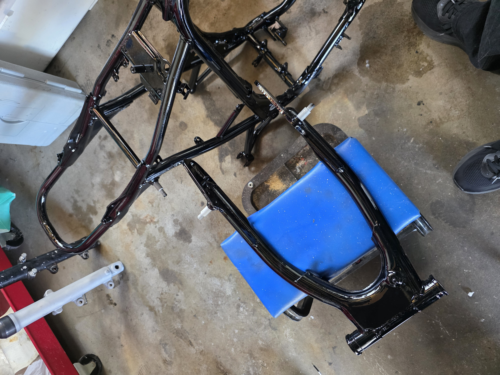
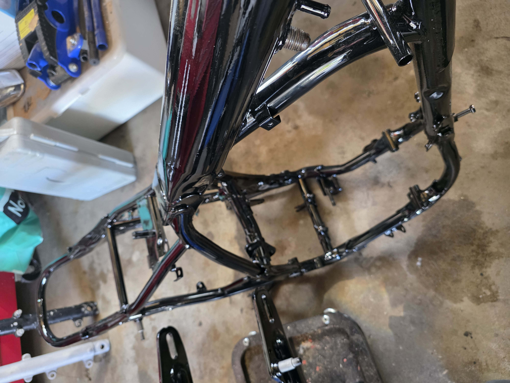
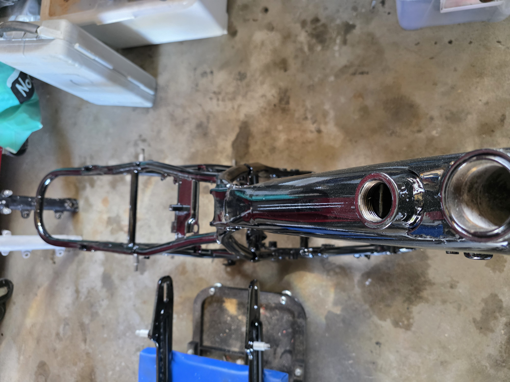

🏗️ Ramma er hentet fra pulverlakkerer!
Dette er en av de store dagene i prosjektet! 🎉 I dag ble ramma og svingarmen hentet hos pulverlakkereren, og resultatet ble over all forventning. Det er nesten ikke til å tro at det er samme ramme som ble levert inn for halvannen uke siden.

Ramma ligger flat og fin — pulverlakken har truffet perfekt i hver eneste krok. Overflaten er jevn og glatt, uten renn eller ujevnheter. Detaljene rundt motorfestene, styrkronelageret og svingarmfestet er skarpe og rene. Akkurat sånn man håper på når man leverer fra seg en blåst ramme!

Detaljbildet viser finishen i full bredde — beina på svingarmfestet, kulepenn-brakett og rammerør har fått et skikkelig profesjonelt strøk. Det er lett å se forskjell på en godt forberedt ramme og en som er lakkert halvveis.
✅ Svingarmen også ferdig

Svingarmen fikk samme behandling, og resultatet matcher ramma perfekt. Den er klar til å monteres med nye foringer og pakninger (som allerede er på lager!).
✅ Tanken levert for glassblåsing og lakk
Samme dag som ramma ble hentet, ble bensintanken levert inn for glassblåsing og ny lakk. Den blir en egen post når den kommer tilbake!
🔜 Neste steg
- Svingarm — montere nye foringer og pakninger
- Begynne montering av forstilling, hjul og bremser på ny ramme
- Planlegge motorarbeid
- Vente på tanken fra lakk
Nå begynner ting virkelig å ligne på en motorsykkel igjen! 🔧🏍️